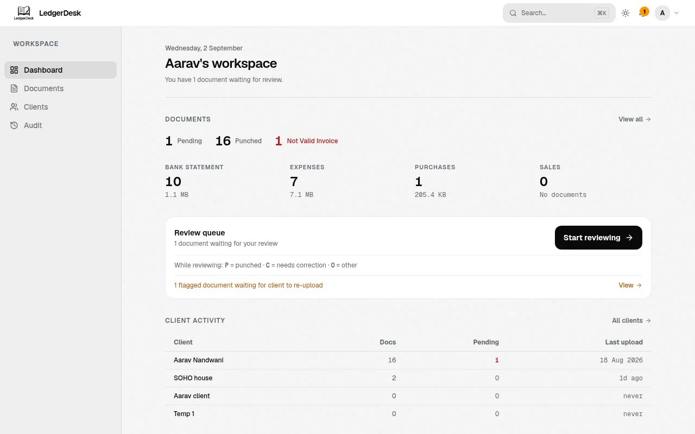

LedgerDesk
Accounting teams were reviewing client documents through email and spreadsheets. I designed the review surface: one queue, one set of states, no ambiguity about what is done and what is not.

- Problem
- Six document states existed in the data and none of them existed on screen. Reviewers were guessing.
- Decision
- Numbers carry the meaning. Pending, punched and invalid each get a value and a colour from one token table. Navigation, tables and dialogs all read from the same tokens.
- Result
- Light and dark share one layout. Body text checked at 4.5:1. A 16 hour review cycle became a queue with a visible end.